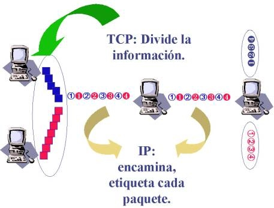

(5 de diciembre de 1969)
| Se establece la primer conexión sobre ARPANET, precursora del internet, originalmente pensada para sobrevivir a un ataque nuclear. |
|---|

|
(1973)
| Vinton Cerf y Robert E. Kahn desarrollan el protocolo TCP/IP siendo adoptado posteriormente por ARPANET |
|---|
|  |